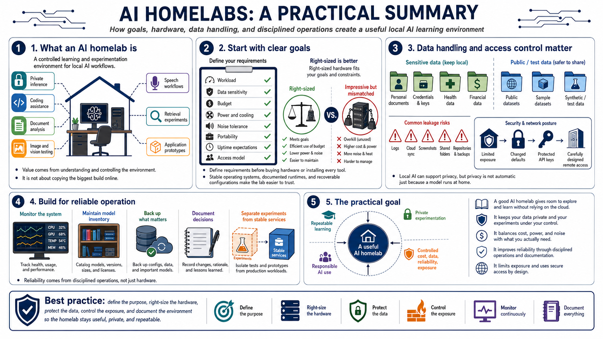

Course Summary and Key Takeaways
Connecting to LMS... Progress: in progress

Narration
An AI homelab is a controlled learning and experimentation environment for local AI workflows. It can support private inference, coding assistance, document analysis, image and vision testing, speech workflows, retrieval experiments, and application prototypes. The value comes from understanding and controlling the environment, not from copying the largest build you see online.
Strong homelabs start with clear goals. Define the workload, data sensitivity, budget, power and cooling limits, noise tolerance, portability needs, uptime expectations, and access model before buying hardware or installing every tool. Right-sized hardware is better than impressive hardware that does not fit the job. Stable operating systems, documented runtimes, and recoverable configurations make the lab easier to trust.
Data handling and access control are central. Separate sensitive data from public test data. Watch logs, cloud sync, screenshots, shared folders, and repositories. Limit service exposure, change defaults, protect API keys, and design remote access carefully. Local AI can support privacy, but privacy is not automatic just because a model runs at home.
The practical goal is a reliable environment that supports repeatable learning, private experimentation, and responsible AI use. Monitor the system, maintain model inventory, back up what matters, document decisions, and keep experiments separated from stable services. A good AI homelab gives you room to explore while keeping cost, data, reliability, and exposure under control.